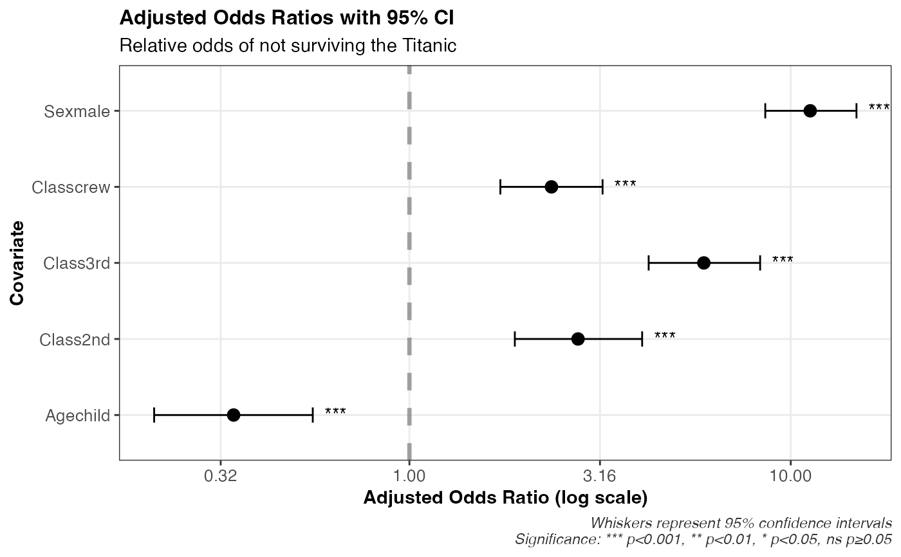

Dot-whisker plot of odds ratios and 95% confidence intervals from a multivariable logistic regression model
plot_logistic_results.RdThis function takes a glm object (the multivariable logistic regression model) and returns a ggplot of the estimated adjusted odds ratios for each covariate, and corresponding 95% confidence intervals.
Usage
plot_logistic_results(
model,
title = "Adjusted Odds Ratios with 95% CI",
subtitle = NULL,
log_scale = TRUE
)Examples
# Visualize the relative odds of not surviving the Titanic
# E.g., For males vs. females, after adjusting for class and age group
library(dplyr)
#>
#> Attaching package: ‘dplyr’
#> The following objects are masked from ‘package:stats’:
#>
#> filter, lag
#> The following objects are masked from ‘package:base’:
#>
#> intersect, setdiff, setequal, union
data("Titanic")
titanic_tbl <- Titanic %>%
tibble::as_tibble() %>%
tidyr::uncount(n) %>%
mutate(
Survived = factor(Survived,levels = c("Yes","No")) %>% as.numeric(),
Survived = Survived - 1,
Survived = factor(Survived)
)
titanic_fit <- glm(Survived ~ Sex + Age + Class,data = titanic_tbl,family = binomial)
plot_logistic_results(
titanic_fit,
subtitle = "Relative odds of not surviving the Titanic"
)
